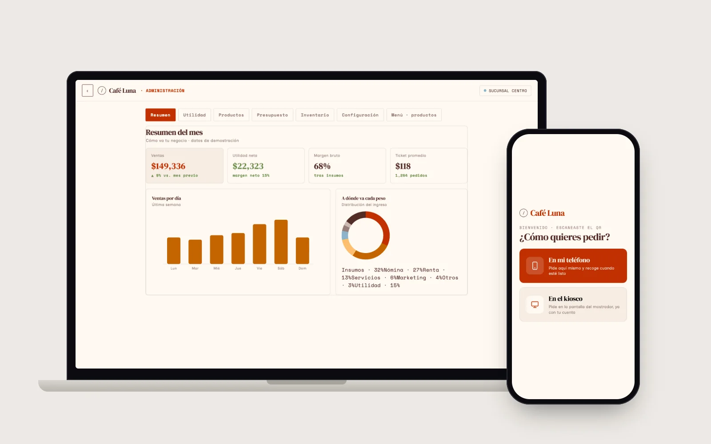

Caso de estudio · Alimentos
Café Luna
Demo propia · sistema para cafeterías · Sep 2026
Demo en vivo
Alan Daniel Méndez JiménezSoftware a medida · Celaya, Gto.
+52 466 160 3682
alannicanor62@gmail.com
+52 466 160 3682
alannicanor62@gmail.com
Kiosko, app del cliente, pantalla de cocina y panel del dueño, los cuatro sincronizados en vivo: lo que pasa en uno aparece al instante en los demás.

El problema
- En una cafetería con fila, el cliente espera para ordenar y otra vez para pagar.
- Las comandas se gritan o se anotan en papel: se pierden, se repiten y nadie sabe cuál va primero.
- Al cierre del día se sabe cuánto se vendió, pero no cuánto quedó ni qué producto deja más.
- La lealtad se lleva en tarjetas de cartón que el cliente olvida o pierde.
La solución
- Kiosko de autoservicio en el mostrador y pedido desde el teléfono del cliente por QR; el cobro se pide desde el teléfono y se aprueba en la terminal.
- Pantalla de cocina con cola por orden de llegada: los pagos con terminal entran solos y solo los de efectivo piden confirmación.
- Panel del dueño: ventas del mes, utilidad neta, margen, ticket promedio, a dónde va cada peso, qué producto deja más, inventario y reinversión sugerida.
- Estrellas de lealtad ligadas al teléfono del cliente, sin tarjetas ni app que instalar.
- Todo se sincroniza por WebSocket con un Durable Object de Cloudflare: un solo estado compartido para las cuatro pantallas.
El resultado
- Demo pública y funcional: abre kiosko, cocina y admin en dos ventanas y verás el pedido moverse entre ellas al instante.
- Sin instalar nada: corre en el navegador de cualquier tablet, teléfono o computadora del negocio.
- Los datos son ficticios y se reinician con un botón, así que cualquiera puede jugar con ella sin romper nada.
HTML/CSS/JSCloudflare PagesWorkers + Durable ObjectsWebSocketPWA